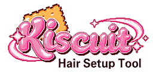

VCC 열기앱이 열리지 않나요?
VCC에서 Add Repository를 선택한 뒤 아래 주소를 붙여넣으세요.
https://raw.githubusercontent.com/kiscuit/kiscuit-packages/main/index.json

VCC 열기VCC에서 Add Repository를 선택한 뒤 아래 주소를 붙여넣으세요.
https://raw.githubusercontent.com/kiscuit/kiscuit-packages/main/index.json